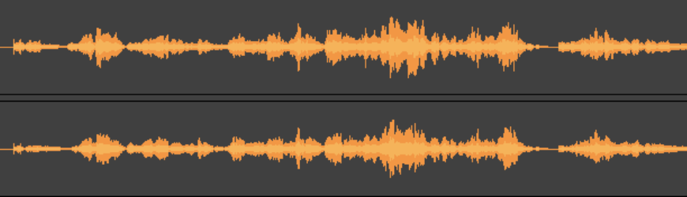

home topics
Vocaledit Topics

Vocal Editing
Logic Pro
Celemony
Autotune
Text to Speech
Microsoft TTS
Google TTS
Amazon Polly
Speech Recognition
Openai Whisper
Vocoders
Arturia Vocoder
Waves Vocoder
THAL Vocoder
Noise Removal
Waves Clarity
iZotope RX10
Synthetic Singers
Vocaloid
Face Animation
Roblox Blog
Face Capture
Facial motion capture Wikipedia
Voice and Communication
Speech
Biological Voice
Vocal Chords
Diaphragma
Platforms
Juce
Theory
Fourier Analysis
info@vocaledit.com
TECH41 GmbH - Berlin - 19.3.2023